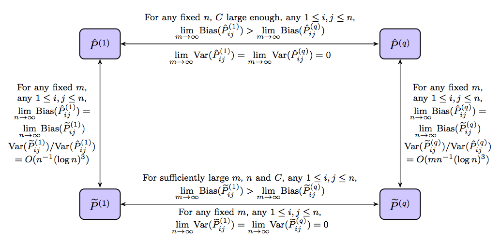
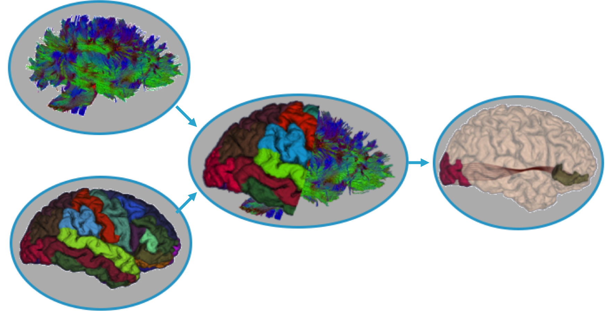

class: center, middle # From RAGs to Riches: ## Utilizing Richly Attributed Graphs to Reason from Heterogeneous Data ### Joshua T. Vogelstein, Randal Burns, Carey Priebe #### SIMPLEX Site Visit: Feb 24, 2016, Johns Hopkins University <!-- #### [Dec 1, 2015 - Dec 31, 2015] --> <!-- ### Joshua T. Vogelstein --> <!-- ### {[BME](http://bme.jhu.edu),[ICM](http://icm.jhu.edu),[CIS](http://cis.jhu.edu),[Kavli](http://kndi.jhu.edu)}@[jhu](http://jhu.edu) --> <!-- #### e: [jovo@jhu.edu](mailto:jovo@jhu.edu) | w: --> <!-- ### [NeuroData.io](http://neurodata.io) --> these slides: <http://docs.neurodata.io/SIMPLEX/Q3/2016-site_visit.html> --- # Intro - [Task A: Computer Science](#cs) building terascale tools to estimate/extract Grutes - [Task B: Statistical Science](#stats) analyzing the statistics of Grutes - [Task C: Datafication](#data) converting data into Grutes - [Task D: Discovery](#discovery) discovering neuroscience principles using Grutes .y[Grute]: Graph with Rich Attributes --- # NeuroData Family .center[ .small[ | | | | | :--- | :--- | :--- | | A: CS | | Randal Burns, Kunal Lillaney, Alex Baden, Alex Eusman, Da Zheng, Disa Mhembere, Ivan Kuznetsov | B: Stats | | .red[Carey Priebe, Cencheng Shen, Vince Lyzinski, Heather Gaddy, Mingyue Gao, Avanti Athreya, Tyler Tomita, Shangsi Wang, Runze Tang, Minh Tang] | C: Data | | .y[Joshua Vogelstein, Kwame Kutten, Greg Kiar, Eric Bridgeford] | D: Discovery | | .green[Joshua Vogelstein, Youngser Park, Jesse Patsolic, Will Gray, Jordan Matelsky] | Collabs | | .purple[Karl Deisseroth, Ed Boyden, Bobby Kasthuri, Mike Milham, Stephen Smith, Rafa Yuste] | Love | | .pink[yummy, family, friends, earth, universe, multiverse?] ]] Success leverages across all components. --- ## Q1-Q3 Main Results: - CS: - spdb supports multispectral *registered* data - FlashX supports matrix operations (eg, SVD, k-means, NMF) - .red[Stats]: - Models & methods for n>=2 graphs - Graphs with hierarchical labels - .y[Data]: - 100+ TB of images from many different data modalities - 100,000+ derived brain graphs (grutes) - .green[Discovery] - Optimal pipelines - Creativity prediction - Reproducible science --- name: pubs # Publications .small[ 1. [S. Chen, K. Liu, Y. Yang, Y. Xu, S. Lee, M. Lindquist, B. S. Caffo, and J. T. Vogelstein. An M-Estimator for Reduced-Rank High-Dimensional Linear Dynamical System Identification. arXiv, 1509.03927, 2015.](http://export.arxiv.org/pdf/1509.03927v1) 2. [N. Binkiewicz, J. T. Vogelstein, and K. Rohe. Covariate Assisted Spectral Clustering. Biometrika (under 2nd round of review), 2016.](http://arxiv.org/pdf/1411.2158v1.pdf) 3. [V. Lyzinski, D. Fishkind, M. Fiori, J. T. Vogelstein, C. E. Priebe, and G. Sapiro. Graph Matching: Relax at Your Own Risk. PAMI, 1405.3133, 2016.](http://arxiv.org/pdf/1405.3133v3.pdf) 4. [R. Airan, J. T. Vogelstein, J. J. Pillai, B. Caffo, J. Pekar, and H. Sair. Stability and localization of inter-individual differences in functional connectivity. HBM, 2016.](http://arxiv.org/pdf/1506.03410v1.pdf) 5. [T. M. Tomita, J. T. Vogelstein, M. Maggioni. Randomer Forest. Under Review, 2016.](http://arxiv.org/pdf/1506.03410v1.pdf) 6. [D. Zheng, D. Mhembere, V. Lyzinksi, J. T. Vogelstein, C. E. Priebe, R. Burns. Semi-External Memory Sparse Matrix Multiplication on Billion-node Graphs in a Multicore Architecture. Under review, 2016.](http://arxiv.org/pdf/1602.02864v2.pdf) 7. [D. Zheng, R. Burns, J. T. Vogelstein, C. E. Priebe, A. S. Szalay. An SSD-based eigensolver for spectral analysis on billion-node graphs. Under review, 2016.](http://arxiv.org/pdf/1602.01421.pdf)] --- ## Software .pull-left[ - Store - Management - [ndlims](https://github.com/openconnectome/ndlims/) - [SpatialDB+RamonDB](https://github.com/openconnectome/open-connectome/) - [ndtilecache](https://github.com/openconnectome/ocptilecache) - Analytics - [ndio](http://docs.neurodata.io/nddocs/ndio/) - [CAJAL](http://docs.neurodata.io/CAJAL/) - Explorer - [Vectors](http://vx.neurodata.io) - [Graphs](http://gx.neurodata.io) - [Images](https://github.com/openconnectome/NeuroDataViz) ] .pull-right[ - Wrangle - [2D Chromatic](https://github.com/mkazhdan/DMG) - [3D Chromatic](http://www.cs.jhu.edu/~misha/Code/GradientDomainFusion/Version1.0/) - [Volume Registration](https://github.com/openconnectome/ndreg/) - [ndparse](http://docs.neurodata.io/nddocs/ndparse/nddl.html) - [m2g](http://m2g.io/) - [i2g](http://i2g.io/) - Analyze - Matrices: [Randomer Forest](http://ttomita.github.io/RandomerForest/) - Graphs - [FlashX](http://flashgx.io) - [Optimal Graph Clustering](https://github.com/TangRunze/SBMopti) - [LLG](https://github.com/mketcha/SimplexMDK) - [Shapes](https://github.com/mkazhdan/ShapeSPH) ] --- # Data - NeuroData is both the .y[largest and most diverse public] neuroscience data repository in the world - NeuroGraphs - We have .y[80,000+] Diffusion MRI derived graphs from 1,000 subjects across multiple atlases. Currently processing additional subjects which will yield a total of 250,000 graphs. - We have .y[200,000+] fMRI derived graphs from ~2,000 subjects across multiple atlases - We have .y[50+] other graphs from other modalities and species with various attributes - NeuroImages - We have .y[100TB+] of high resolution data (EM, array tomography, CLARITY, MRI...) --- name: cs # Computations ## [Spatial Data](site-vist/darpa.jhu.2016.spatial.pptx) .bottom[randal: SIMPLEX] --- ## [Infrastructure](https://docs.google.com/presentation/d/1tjeHu0WSsBJLm-ByAXEnnNq93yNiD_2Ya0E_t0u7w-A/edit?usp=sharing) .bottom[@kunallillaney: SIMPLEX] --- ## [Image Explorer](https://www.dropbox.com/sh/e3jnsp0g4z98hgj/AACP31A0UyofT-KnOPY0cc8ja/SIMPLEX_20160222.pptx?dl=0) .bottom[@alexbaden: SIMPLEX] --- # Computations ## [Semi-External Memory](site-vist/darpa.jhu.2016.sem.pptx) .bottom[randal: GRAPHS + SIMPLEX] --- ## [FlashMatrix](https://docs.google.com/presentation/d/12lffy9A2uSGrJXNQN21KpSiYdeNvh69mr5wHWgxuOTE/edit?usp=sharing) [for more info](http://docs.neurodata.io/ndintro/cs_slides.html#matrices) .bottom[@zhengda: SIMPLEX] --- ## [FlashX: k-means](https://docs.google.com/presentation/d/1z62_SqSNqbDkY4ECBJrb5TWkpP10csnRp_aVuPEVUG0/edit?usp=sharing) .bottom[@disa-mhembere: SIMPLEX] --- ## Other Stuff - [Graph Explorer](http://gx.neurodata.io) - [Matrix Explorer](http://vx.neurodata.io) - [Shape Descriptors](https://github.com/mkazhdan/ShapeSPH) - [2D Stiching Correction](https://github.com/mkazhdan/DMG) - [3D Histogram Normalization](http://www.cs.jhu.edu/~misha/Code/GradientDomainFusion/Version1.0/) - [LIMS](https://github.com/neurodata/ndlims) - [Pyton API](http://docs.neurodata.io/nddocs/ndio/) --- ## Future Directions .bottom[@randal] --- # Graph Matching .bottom[vince: GRAPHS/SIMPLEX] --- name: stats # Statistics - [Vertex Nomination](#vn) - [HSBM](#hsbm) - [Robust LLG](#llg) - [Testing on Sub-manifolds](#lrt) - [Randomer Forest](#rerf) - [Dependence Testing](#mgc) #### Graphs: statistical models/methods for analysis of single/simple graphs #### SIMPLEX: statistical models/methods for analysis of multiple/complicated graphs --- name: vn ## Vertex Nomination Via Local Neighborhood Matching .center[ <img src="site-visit/F2large.jpg" style="height: 300px;"/> ] image courtesy of: Suvakov et al. 'How the Online Social Networks are used: dialogues-bsed structure of MySpace,' http://rsif.royalsocietypublishing.org/content/10/79/20120819 .bottom[@heather: SIMPLEX] --- ### Problem Formulation * Have two (or more) large networks * There are vertices of interest (VOI) in one network that we'd like to find in the other network. * Often vertex attributes alone are not enough to identify VOI in the other networks. * So we find seeded vertices adjacent to VOIs and identifiable in both networks. --- ### Real Data Example * Use the seeds to generate local neighborhood graphs in both networks (hopefully containing the VOI in each network) * Use seeded graph matching to align the networks and create a nomination list for each VOI. .center[ <img src="site-visit/TwitGraphNumbers.png" style="height: 250px;"/> <img src="site-visit/InstaGraphNumbers.png" style="height: 250px;"/> ] --- ### Benefit of Seeds in Instagram/Twitter matching .center[ <img src="site-visit/instatwit_evenSeedsS56781_20160120.png" style="height: 400px;"/> ] --- name: hsbm ## [HSBM](site-visit/hsbm.pdf) .bottom[@avanti: SIMPLEX] --- name:llg ## Robust LLG .center[ <img src="site-visit/brain.jpg" style="width: 500px;"/> ] .bottom[@tangrunze: SIMPLEX] --- ### Relationship - Rank-reduction procedure improves the element-wise MLE; - Robust estimator degrades much slower than MLE with contaminations; - Our estimator not only inherits robustness from element-wise robust estimators but also has small variance due to rank-reduction procedure. .center[  ] --- ### Contamination - Without conatmination: Robust estimator is slightly worse than MLE; - With contamination: Robust estimator, which degrades slowly, outperforms the MLE. .center[ <img src="site-visit/Cluster.png" style="width: 500px;"/> ] --- name: lrt ## [Testing on Sub-manifolds](site-visit/mingyue.pdf) .bottom[@mingyue: SIMPLEX] --- name: rerf ## [Randomer Forest] .bottom[@ttomita: SIMPLEX] --- name: mgc ## Dependence Testing - Testing dependence between variables is a fundamental statistical inquiry - Lots of work on it, largely focusing on low-dimensional and/or linear data - We would like a test that works in the following settings: - linear & nonlinear - low-dimensional and high-dimensional - in the presence of outliers - reveals *scale* of interest - on real data .bottom[@chsen6: SIMPLEX] --- ### 20 different simulation settings .center[ <img src="site-visit/Fig0.png" alt="Drawing" style="width: 800px;"/> ] --- ### power in low dimensions .center[ <img src="site-visit/Fig1b.png" alt="Drawing" style="width: 800px;"/> ] --- ### power in high dimensions .center[ <img src="site-visit/Fig5b.png" alt="Drawing" style="width: 800px;"/> ] --- ### discovering scale .center[ <img src="site-visit/Fig6.png" alt="Drawing" style="width: 800px;"/> ] --- ### theory - multiscale graph correlation is consistent for .y[all] possible relationships - this includes for increasingly .y[high-dimensional] data - and there are examples where multiscale .y[improves] upon global for any sample size --- ### real data .center[ <img src="site-visit/FigReal1.png" alt="Drawing" style="height: 500px;"/> ] --- ### implications - we can now discover .y[relationships] that were previously difficult to detect - we can also discover which .y[scales] are relevant - next we will deployable more .y[efficient] implementations --- ## Future Directions --- name: data # Datafication - Images - EM - AT - CLARITY - Calcium Imaging - X-Ray Microscopy - Expansion Microscopy - MR - Graphs - Human - Non-human --- ## [Images](ttps://github.com/openconnectome/ocp-journal-paper/blob/gh-pages/Results/Tables/Table1/table1_v3.md) .center[ <iframe width="700" height="500" src="http://docs.neurodata.io/ocp-journal-paper/#tab:images" frameborder="0" allowfullscreen></iframe> ] .bottom[@jordan: everything not EM/AT is SIMPLEX] --- name:human-graphs ## Human Graphs .center[ <iframe width="700" height="500" src="https://docs.google.com/spreadsheets/d/1kRdYBgl_LdB6SRdUh6DI3yS6sxVUlHhlaDqYx7blT-Y/edit?usp=sharing" frameborder="0" allowfullscreen></iframe> ] .bottom[@greg: 1st 2,000=GRAPHS, rest=SIMPLEX] --- name:all-graphs ## All Graphs .center[ <iframe width="700" height="500" src="http://openconnecto.me/graph-services/download/" frameborder="0" allowfullscreen></iframe> ] .bottom[@disa: GRAPHS] --- name: discovery # Discovery - [Optimal Pipelines](#discrim) - [Connectome vs. CCI](#cci) - Kasthuri Claims - CLARITY --- name: discrim ## Optimal Pipelines --- ### Motivation Many entities are activlely collecting data and making data available to public. It is crucial to optimally collect and process data for a variety of tasks. -- ### Intuition If data are collected and processed correctly, observations from one subject should be close to each other comparing to observations from other subjects. -- ### Definition of Reliability We propose a definition of reliability to guide data collection and processing. Reliability is defined to be the probability that within subject distance to be greater than across subject distance. --- ### Reliability in Practice We designed a reliability estimator computed from test-retest data set. Among multiple processing pipelines, we select the pipeline which maxmizes the reliability estimates. -- ### Reliability and Prediction If we have a label to predict, the minimal achievable prediction error is proved to be upper bounded by a decreasing function of reliability. Therefore, maximizing reliability is equivalent to minimizing subsequent prediction error. ### Consistency of Estimation The estimator designed is shown to be unbiased, and converges to the true reliability in probability as the number samples goes to infinity. --- ##### An example of reliable data set. 2-by-2 blocks are observations come from the same subjects. Within subject distances tend to be smaller than across subject distances.  --- ##### Raw fMRI graphs are converted into binary graph by thresholding. The threshold which maximizes reliability yields optimal prediction performance.  --- ##### 12 fMRI data sets are processed using 64 pipelines. CFXXG is the best fMRI processing pipeline.  --- name: cci ## [semipar-cci](http://www.cis.jhu.edu/~parky/MRN/ceplm.html) --- ## CLARITY --- ## dwi connectomes: overview <br> .pull-left[ ##### We have a one-click scalable pipeline to estimate structural connectomes ##### Quantitative analysis of brain structure to predict or assess cognitive capabilities, medical diagnosis ##### Lowers the barrier for entry to large scale MR processing ##### Connectomics is to the brain what Genomics is to DNA ] .pull-right[ <br> <img src="site-visit/m2g_overview.png" alt="overview" style="width: 80%; padding-top=60px; padding-left:80px"/> ] --- ## ndmg: pipeline <br> .left[ <img src="https://raw.githubusercontent.com/openconnectome/m2g/dipy-dev/docs/images/m2g.png" alt="Pipeline" style="width: 110%; padding-top:30px"/> ] --- ## dwi connectomes: region mapping <br> .center[  ] --- ## dwi connectomes: graph generation <br> .center[ <img src="site-visit/m2g_graphgen.png" alt="graphgen" style="width: 90%"/> ] --- ## connectomes: assessment - We evaluate the discriminability of our derivatives by computing a mean normalized rank (MNR) score [0, 1]. - We achieve excellent scores [KKI42: 0.989, SWU: 0.986] .pull-left[ <br> <img src="site-visit/desikan_trt.jpeg" alt="desikan" style="width: 80%; padding-top=30px"/> ] .pull-right[ <br> <img src="https://raw.githubusercontent.com/openconnectome/m2g/dipy-dev/docs/images/OHBM2016-fig1.png" alt="m2g is reliable" style="width: 100%"/> ] --- ## dwi connectomes: summary <br> #### We have a novel robust, reliable pipeline to estimate brain graphs #### Pipeline has been used to generate 100,000 graphs across many different atlases with more to come #### Code and results are publicly available (e.g., `pip install ndmg`) --- ## claims: overview ##### The data and code needed to reproduce scientific results is often difficult to obtain and use ##### The problem is exacerbated as data grows in size and complexity ##### We provide a standardized format and interface to enable reproducible science ##### We use these tools to demonstrate reproducible, scalable science through a series of juypter notebooks --- ## claims: Kasthuri 2015 paper .center[ <iframe width="700" height="500" src="http://docs.neurodata.io/kasthuri2015/" frameborder="0"></iframe> ] --- ## claims: ramon Reusable Annotation Markup for Open Neuroscience .center[ <img src="site-visit/ramon.png" alt="graphgen" style="width: 100%"/> ] --- ## claims: ingest ##### We provide a standard (csv-based) data ingest target for RAMON metadata ##### We use our open source python tools (`ndio` and `ndparse`) to ingest from this common endpoint ##### Data types and metadata are arbitrarily extensible to meet user needs ##### Users may extend our tools to develop their own upload standard or interface --- ## claims: examples under active development: [https://github.com/neurodata/kasthuri2015/tree/master/claims](https://github.com/neurodata/kasthuri2015/tree/master/claims) .center[ <img src="site-visit/syn_claim.jpg" alt="synclaims" style="height: 400px"/> ] --- class: center # Questions? _____ Funding DARPSIMPLEX ____ w: [neurodata.io](http://neurodata.io) d: [docs.neurodata.io](http://docs.neurodata.io) e: [support@neurodata.io](mailto:support@neurodata.io)